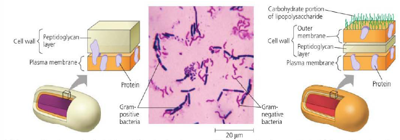

Từ quan sát đến cấu trúc tế bào vi khuẩn
Slide 1 và 2–3 · Lịch sử, vi khuẩn và Archaea · 8 trắc nghiệm và 1 tự luận
Bắt đầu học ↓Học buổi rút gọn · đọc hình và làm 10 câu · Học trọn chương và làm bộ 80 trắc nghiệm, 15 tự luận
Sau buổi này
- Phân biệt quan sát, giả thuyết và kết luận trong một đối chứng lịch sử.
- Giải thích khác biệt kiến trúc Gram dương và Gram âm.
- Liên hệ vách, màng, ribosome, nucleoid và nội bào tử với chức năng.
Gợi nhớ · 5 phút
Vẽ một tế bào vi khuẩn từ trí nhớ. Ghi một lớp bảo vệ, một cấu trúc tổng hợp protein và vị trí DNA chính.
Đọc hình và nắm kiến thức · 20 phút
Quan sát hình minh họa

Hai lát cắt sơ đồ nằm hai bên ảnh kính quang học. Thước 20 µm thuộc ảnh kính ở giữa.
Quan sát · Chỉ hai loại màu trong ảnh giữa, rồi tìm lớp peptidoglycan và màng ngoài trên hai sơ đồ bên.
Dự đoán · Sơ đồ nào phù hợp với mẫu B có màu hồng và màng ngoài?
Mở giải thích sau khi dự đoán
Sơ đồ bên phải có peptidoglycan mỏng và màng ngoài, phù hợp kiểu Gram âm của B. Màu trên ảnh và sơ đồ cấu trúc củng cố cùng một cách phân nhóm.
| Kiểu vách điển hình | Lớp trong | Lớp tiếp theo | Ngoài cùng |
|---|---|---|---|
| Gram dương | Màng sinh chất | Peptidoglycan dày | Có thể có vỏ nhầy |
| Gram âm | Màng sinh chất | Peptidoglycan mỏng trong khoang chu chất | Màng ngoài chứa LPS ở kiểu điển hình |
Đọc từng hàng từ màng sinh chất đến bề mặt để thấy vị trí của peptidoglycan.
- 1. Hình thái
Mô tả hình dạng và cách sắp xếp.
- 2. Lớp bao
Đối chiếu màu Gram với dữ kiện cấu trúc và đối chứng.
- 3. Phân loại
Bổ sung kiểu hình hoặc dữ liệu phân tử để định danh.
Dùng nhiều nguồn bằng chứng để nâng độ chắc chắn.
Đọc hình để tự rút ra cơ chế
Quan sát · Trên hai ảnh nhuộm, nhiều tế bào có cùng dáng que. Một nhóm bắt màu khác nhóm kia.
Dự đoán · Có thể dùng hình dạng và màu để gán loài cho cả hai nhóm chưa? Hãy nêu một điều nên kiểm tra trước.
Mở giải thích sau khi dự đoán
Hình dạng và màu bắt nhuộm giúp mô tả sơ bộ. Cần kiểm chất lượng ảnh và kết quả nhuộm, sau đó kết hợp thêm dữ kiện phân biệt như đặc điểm kiểu hình chuyên biệt hoặc đối chiếu nguồn tham chiếu.
Từ quan sát tới kết luận
Kính hiển vi mở rộng khả năng quan sát. Bình cổ cong của Pasteur minh họa vai trò của đối chứng. Không khí vẫn vào được, còn bụi mang hạt bị giữ lại. Kết quả ủng hộ việc vi sinh vật đi vào từ môi trường trong điều kiện đã khảo sát.
Lớp bao và hình thái
Hình cầu và hình que mô tả dáng tế bào. Sắp xếp chuỗi hay cụm cung cấp dữ kiện riêng. Kiến trúc Gram dương điển hình có peptidoglycan dày. Gram âm điển hình có peptidoglycan mỏng, nằm trong khoang chu chất giữa hai màng. Màng sinh chất điều hòa trao đổi, còn vách nâng đỡ và chống tác động thẩm thấu.
Cấu trúc và chức năng
Nucleoid là vùng chứa nhiễm sắc thể. Plasmid là phân tử DNA ngoài nhiễm sắc thể ở nhiều vi khuẩn. Ribosome tổng hợp protein. Tiêm mao thường giúp di chuyển và nhiều fimbriae giúp bám. Nội bào tử ở một số nhóm là trạng thái tồn tại chống chịu. Phân đôi làm tăng số cá thể.
Vi khuẩn và Archaea
Cả hai có kiểu tổ chức tế bào nhân sơ. Archaea là một miền riêng, với lipid màng chứa liên kết ether điển hình và vách không có peptidoglycan vi khuẩn. Hình thái tương tự chỉ là bằng chứng bước đầu.
Liên hệ thực tế
Ảnh kính trong báo cáo thực hành thường hỗ trợ nhận định hình thái và màu nhuộm. Khi dữ kiện ảnh còn ít, báo cáo nên dừng ở mô tả có bằng chứng và nêu loại quan sát cần thêm.
Tự kiểm · 25 phút
Ba mẫu trong bộ ảnh giảng dạy
Nhóm học nhận ba hồ sơ minh họa và ảnh thí nghiệm cổ cong của Pasteur. Đối chứng màu Gram trên cùng bộ ảnh cho kết quả đúng như dự kiến.

Hai vế cùng tiếp xúc không khí. Khác biệt trong sơ đồ là hạt có tiếp xúc với dịch.
| Hồ sơ | Quan sát tế bào | Dữ kiện độc lập |
|---|---|---|
| A | Cầu khuẩn tím, xếp chuỗi | Peptidoglycan dày |
| B | Trực khuẩn hồng | Có màng ngoài |
| C | Hình que, không có nhân có màng | Lipid màng ether kiểu Archaea, vách không có peptidoglycan vi khuẩn |
Đối chiếu và hẹn ôn · 10 phút
Chọn một chỗ còn phân vân. Giải thích lại bằng lời của mình rồi thử một câu cùng dạng.
Mở đáp án và giải thích · VSV-01
Xem trong bộ bài tập của chủ đề
Học tiếp theo slide